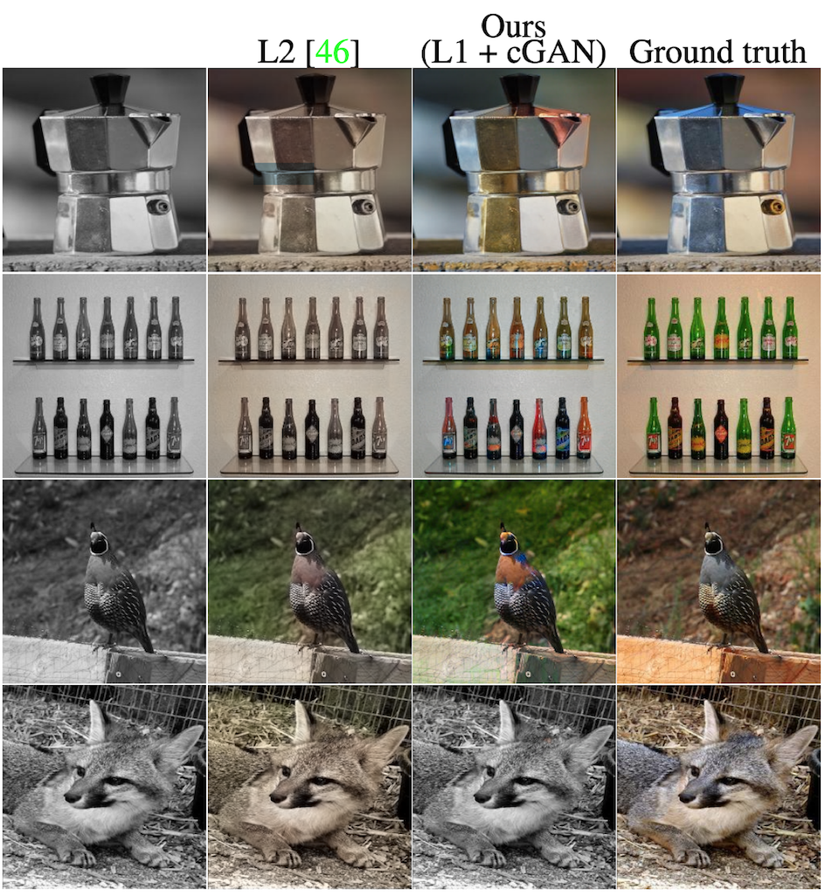
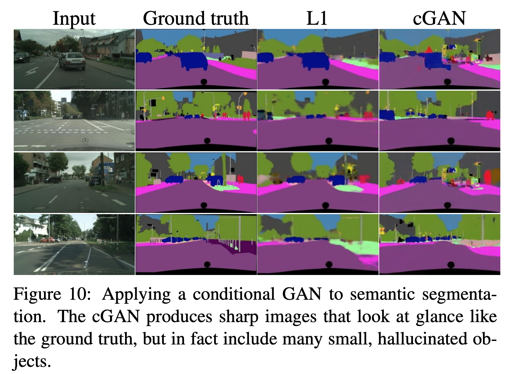

background-image: url('../figs/title.png') --- class: center, middle # Chapter 13 - Generative Adversarial Networks --- # Image Classification .col70[ - Given an image, what class is it? (only pick one) - Encoder - Decoder (fully connected layer) - Softmax - Optimize via cross-entropy loss ] .col30[ .height480[ <figure class="chart"> <div class="mermaidsvg"> <div class="mermaid"> flowchart TD subgraph Encoder 1[Input Image 256x256x3]-- 3x3, 16 conv<br />maxpool--> 2[128x128x16] 2 -- 3x3, 32 conv<br />maxpool--> 3[64x64x32] 3 -- 3x3, 64 conv<br />maxpool--> 4[32x32x64] 4 -- 3x3, 128 conv<br />maxpool--> 5[16x16x128] end subgraph Decoder 5 -- global average pool --> 7c[128] 7c -- connected<br />softmax --> 8c[1000 classes] subgraph Optimize Cross-Entropy Loss 8c end end </div> </div> <figcaption>Image Classifier <a target="_blank" href="../chartsrc?src=%0Aflowchart+TD%0A++++subgraph+Encoder%0A++++1%5BInput+Image+256x256x3%5D--+3x3%2C+16+conv%3Cbr+%2F%3Emaxpool--%3E+2%5B128x128x16%5D%0A++++2+--+3x3%2C+32+conv%3Cbr+%2F%3Emaxpool--%3E+3%5B64x64x32%5D%0A++++3+--+3x3%2C+64+conv%3Cbr+%2F%3Emaxpool--%3E+4%5B32x32x64%5D%0A++++4+--+3x3%2C+128+conv%3Cbr+%2F%3Emaxpool--%3E+5%5B16x16x128%5D%0A++++end%0A++++subgraph+Decoder%0A++++5+--+global+average+pool+--%3E+7c%5B128%5D%0A++++7c+--+connected%3Cbr+%2F%3Esoftmax+--%3E+8c%5B1000+classes%5D%0A++++subgraph+Optimize+Cross-Entropy+Loss%0A++++8c%0A++++end%0A++++end%0A%0A">(source)</a></figcaption> </figure> ] ] --- # Image Tagging .col70[ - Given an image, what tags apply? (can be multiple) - Encoder - Decoder (fully connected layer) - Logistic activation - Optimize via binary cross-entropy loss ] .col30[ .height480[ <figure class="chart"> <div class="mermaidsvg"> <div class="mermaid"> flowchart TD subgraph Encoder 1[Input Image 256x256x3]-- 3x3, 16 conv<br />maxpool--> 2[128x128x16] 2 -- 3x3, 32 conv<br />maxpool--> 3[64x64x32] 3 -- 3x3, 64 conv<br />maxpool--> 4[32x32x64] 4 -- 3x3, 128 conv<br />maxpool--> 5[16x16x128] end subgraph Decoder 5 -- global average pool --> 7c[128] 7c -- connected<br />logistic --> 8c[tags] subgraph Optimize Binary Cross-Entropy Loss 8c end end </div> </div> <figcaption>Image Tagger <a target="_blank" href="../chartsrc?src=%0Aflowchart+TD%0A++++subgraph+Encoder%0A++++1%5BInput+Image+256x256x3%5D--+3x3%2C+16+conv%3Cbr+%2F%3Emaxpool--%3E+2%5B128x128x16%5D%0A++++2+--+3x3%2C+32+conv%3Cbr+%2F%3Emaxpool--%3E+3%5B64x64x32%5D%0A++++3+--+3x3%2C+64+conv%3Cbr+%2F%3Emaxpool--%3E+4%5B32x32x64%5D%0A++++4+--+3x3%2C+128+conv%3Cbr+%2F%3Emaxpool--%3E+5%5B16x16x128%5D%0A++++end%0A++++subgraph+Decoder%0A++++5+--+global+average+pool+--%3E+7c%5B128%5D%0A++++7c+--+connected%3Cbr+%2F%3Elogistic+--%3E+8c%5Btags%5D%0A++++subgraph+Optimize+Binary+Cross-Entropy+Loss%0A++++8c%0A++++end%0A++++end%0A%0A">(source)</a></figcaption> </figure> ] ] --- # Object Detection .col70[ - Given an image, what objects are present and where? - Encoder - Decoder (convolutional layers) - Optimize bounding box and class predictions ] .col30[ .height480[ <figure class="chart"> <div class="mermaidsvg"> <div class="mermaid"> flowchart TD subgraph Encoder 1[Input Image 256x256x3]-- 3x3, 16 conv<br />maxpool--> 2[128x128x16] 2 -- 3x3, 32 conv<br />maxpool--> 3[64x64x32] 3 -- 3x3, 64 conv<br />maxpool--> 4[32x32x64] 4 -- 3x3, 128 conv<br />maxpool--> 5[16x16x128] end subgraph Decoder 5 -- 3x3, 128 conv--> 6[16x16x128] 6 -- activations --> 7[detection encoding tensor] subgraph Optimize BBox + Classification Loss 7 end end </div> </div> <figcaption>Object Detector <a target="_blank" href="../chartsrc?src=%0Aflowchart+TD%0A++++subgraph+Encoder%0A++++1%5BInput+Image+256x256x3%5D--+3x3%2C+16+conv%3Cbr+%2F%3Emaxpool--%3E+2%5B128x128x16%5D%0A++++2+--+3x3%2C+32+conv%3Cbr+%2F%3Emaxpool--%3E+3%5B64x64x32%5D%0A++++3+--+3x3%2C+64+conv%3Cbr+%2F%3Emaxpool--%3E+4%5B32x32x64%5D%0A++++4+--+3x3%2C+128+conv%3Cbr+%2F%3Emaxpool--%3E+5%5B16x16x128%5D%0A++++end%0A++++subgraph+Decoder%0A++++5+--+3x3%2C+128+conv--%3E+6%5B16x16x128%5D%0A++++6+--+activations+--%3E+7%5Bdetection+encoding+tensor%5D%0A++++subgraph+Optimize+BBox+%2B+Classification+Loss%0A++++7%0A++++end%0A++++end%0A%0A">(source)</a></figcaption> </figure> ] ] --- # Semantic Segmentation .col70[ - Given an image, what pixels correspond to what class? - Encoder - Decoder (convolutional layers + upsampling) - Optimize pixel-wise cross-entropy loss ] .col30[ .height480[ <figure class="chart"> <div class="mermaidsvg"> <div class="mermaid"> flowchart TD subgraph Encoder 1[Input Image 256x256x3]-- 3x3, 16 conv<br />maxpool--> 2[128x128x16] 2 -- 3x3, 32 conv<br />maxpool--> 3[64x64x32] 3 -- 3x3, 64 conv<br />maxpool--> 4[32x32x64] 4 -- 3x3, 128 conv<br />maxpool--> 5[16x16x128] end subgraph Decoder 5 -- 3x3, 64 conv<br /> upsample--> 6[32x32x64] 6 -- 3x3, 32 conv<br /> upsample--> 7[64x64x32] 7 -- 3x3, 80 conv<br />upsample--> 8[128x128x80] 8 -- pixel-wise softmax --> 9[Segmentation Mask] subgraph Optimize Pixel-Level Cross Entropy 9 end end </div> </div> <figcaption>Image Segmenter <a target="_blank" href="../chartsrc?src=%0Aflowchart+TD%0A++++subgraph+Encoder%0A++++1%5BInput+Image+256x256x3%5D--+3x3%2C+16+conv%3Cbr+%2F%3Emaxpool--%3E+2%5B128x128x16%5D%0A++++2+--+3x3%2C+32+conv%3Cbr+%2F%3Emaxpool--%3E+3%5B64x64x32%5D%0A++++3+--+3x3%2C+64+conv%3Cbr+%2F%3Emaxpool--%3E+4%5B32x32x64%5D%0A++++4+--+3x3%2C+128+conv%3Cbr+%2F%3Emaxpool--%3E+5%5B16x16x128%5D%0A++++end%0A++++subgraph+Decoder%0A++++5+--+3x3%2C+64+conv%3Cbr+%2F%3E+upsample--%3E+6%5B32x32x64%5D%0A++++6+--+3x3%2C+32+conv%3Cbr+%2F%3E+upsample--%3E+7%5B64x64x32%5D%0A++++7+--+3x3%2C+80+conv%3Cbr+%2F%3Eupsample--%3E+8%5B128x128x80%5D%0A++++8+--+pixel-wise+softmax+--%3E+9%5BSegmentation+Mask%5D%0A++++subgraph+Optimize+Pixel-Level+Cross+Entropy%0A++++9%0A++++end%0A++++end%0A%0A">(source)</a></figcaption> </figure> ] ] --- # Image Captioning .col70[ - Given an image, write a caption for the image - Encoder - Decoder (recurrent or transformer language model) - Optimize word-level cross-entropy loss ] .col30[ .height480[ <figure class="chart"> <div class="mermaidsvg"> <div class="mermaid"> flowchart TD subgraph Encoder 1[Input Image 256x256x3]-- 3x3, 16 conv<br />maxpool--> 2[128x128x16] 2 -- 3x3, 32 conv<br />maxpool--> 3[64x64x32] 3 -- 3x3, 64 conv<br />maxpool--> 4[32x32x64] 4 -- 3x3, 128 conv<br />maxpool--> 5[16x16x128] end subgraph Decoder 5 -- global average pool --> 7e[128] 7e -- transformer language model --> 8e[variable length text] subgraph Optimize Word-Level Cross-Entropy 8e end end </div> </div> <figcaption>Image Captioner <a target="_blank" href="../chartsrc?src=%0Aflowchart+TD%0A++++subgraph+Encoder%0A++++1%5BInput+Image+256x256x3%5D--+3x3%2C+16+conv%3Cbr+%2F%3Emaxpool--%3E+2%5B128x128x16%5D%0A++++2+--+3x3%2C+32+conv%3Cbr+%2F%3Emaxpool--%3E+3%5B64x64x32%5D%0A++++3+--+3x3%2C+64+conv%3Cbr+%2F%3Emaxpool--%3E+4%5B32x32x64%5D%0A++++4+--+3x3%2C+128+conv%3Cbr+%2F%3Emaxpool--%3E+5%5B16x16x128%5D%0A++++end%0A++++subgraph+Decoder%0A++++5+--+global+average+pool+--%3E+7e%5B128%5D%0A++++7e+--+transformer+language+model+--%3E+8e%5Bvariable+length+text%5D%0A++++subgraph+Optimize+Word-Level+Cross-Entropy%0A++++8e%0A++++end%0A++++end%0A%0A">(source)</a></figcaption> </figure> ] ] --- # How To Solve Any Vision Problem? .col70[ - Pre-train encoder (optional) - Design embedding of output + decoder - Pick loss function for output format - Label training data - Train encoder + decoder with your loss ] .col30[ .height480[ <figure class="chart"> <div class="mermaidsvg"> <div class="mermaid"> flowchart TD subgraph Data X y end subgraph Model X --> Input Input --Encoder--> Features Features --Decoder--> Embedding end Embedding --> Loss y --> Loss </div> </div> <figcaption>Universal Solver <a target="_blank" href="../chartsrc?src=%0Aflowchart+TD%0A++++subgraph+Data%0A++++X%0A++++y%0A++++end%0A++++subgraph+Model%0A++++X+--%3E+Input%0A++++Input+--Encoder--%3E+Features%0A++++Features+--Decoder--%3E+Embedding%0A++++end%0A++++Embedding+--%3E+Loss%0A++++y+--%3E+Loss%0A">(source)</a></figcaption> </figure> ] ] --- # New Problem: Image Colorization .col50[ Say you want to re-color old or grayscale images. Gathering data is easy, get a bunch of images, convert them to grayscale, you have input data and labels. But there's a problem - Loss functions (like L2) minimize error - Ambiguity, apple could be red, green, yellow... - Minimize loss by shooting for the middle.... gray! ] .col50[ <figure class="image"> <img src="../figs/applesbw.jpg" alt="A grayscale image of 5 apples of various shapes and textures." data-attribution=""> <figcaption>Colorize Me!</figcaption> </figure> ] .clear[ ] <br /> <figure class="chart"> <div class="mermaidsvg"> <div class="mermaid"> flowchart LR subgraph Data Color --> Grayscale end Grayscale --> Colorizer Colorizer --> gen[Colorized Images] gen --> L2[L2 Loss] Color --> L2 L2 --> Colorizer </div> </div> <figcaption>Training Colorizer <a target="_blank" href="../chartsrc?src=%0Aflowchart+LR%0A++++subgraph+Data%0A++++Color+--%3E+Grayscale%0A++++end%0A%0A++++Grayscale+--%3E+Colorizer%0A++++Colorizer+--%3E+gen%5BColorized+Images%5D%0A++++gen+--%3E+L2%5BL2+Loss%5D%0A++++Color+--%3E+L2%0A++++L2+--%3E+Colorizer%0A">(source)</a></figcaption> </figure> --- # New Problem: Image Colorization .col50[ Say you want to re-color old or grayscale images. Gathering data is easy, get a bunch of images, convert them to grayscale, you have input data and labels. But there's a problem - Loss functions (like L2) minimize error - Ambiguity, apple could be red, green, yellow... - Minimize loss by shooting for the middle.... gray! For some problems (like colorization) we don't want to minimize error over a bunch of ambiguous choices (red, green, yellow...) because the average looks bad (brownish-red). We'd rather have the network pick one color and go with that. How do we get a model where the error is perceptual? We want the image to "look good". ] .col50[ <figure class="image"> <img src="../figs/applecolors.png" alt="A color image of the five apples, they are dark red, green, pink, yellow, and red, ish. Also shows the average color of all the apples it's like a brownish red, looks gross." data-attribution=""> <figcaption>Average Colors Look Gross</figcaption> </figure> ] --- # Perceptual Loss .col70[ - Want a perceptual loss (does the image look good?) - Also want gradients (if it looks bad, how do we make it look better?) - Can train a network! - Feed in images that look good and look bad - Network learns to tell difference - Can backpropagate error through network, will tell us how to update image to make it look "better" or "worse" ] .col30[ .height480[ <figure class="chart"> <div class="mermaidsvg"> <div class="mermaid"> flowchart TD subgraph Encoder 1[Input Image 256x256x3]-- 3x3, 16 conv<br />maxpool--> 2[128x128x16] 2 -- 3x3, 32 conv<br />maxpool--> 3[64x64x32] 3 -- 3x3, 64 conv<br />maxpool--> 4[32x32x64] 4 -- 3x3, 128 conv<br />maxpool--> 5[16x16x128] end subgraph Decoder 5 -- global average pool --> 7c[128] 7c -- connected<br />logistic --> 8c[binary classification] subgraph Optimize Binary Cross-Entropy 8c end end </div> </div> <figcaption>Discriminator <a target="_blank" href="../chartsrc?src=%0Aflowchart+TD%0A++++subgraph+Encoder%0A++++1%5BInput+Image+256x256x3%5D--+3x3%2C+16+conv%3Cbr+%2F%3Emaxpool--%3E+2%5B128x128x16%5D%0A++++2+--+3x3%2C+32+conv%3Cbr+%2F%3Emaxpool--%3E+3%5B64x64x32%5D%0A++++3+--+3x3%2C+64+conv%3Cbr+%2F%3Emaxpool--%3E+4%5B32x32x64%5D%0A++++4+--+3x3%2C+128+conv%3Cbr+%2F%3Emaxpool--%3E+5%5B16x16x128%5D%0A++++end%0A++++subgraph+Decoder%0A++++5+--+global+average+pool+--%3E+7c%5B128%5D%0A++++7c+--+connected%3Cbr+%2F%3Elogistic+--%3E+8c%5Bbinary+classification%5D%0A++++subgraph+Optimize+Binary+Cross-Entropy%0A++++8c%0A++++end%0A++++end%0A%0A">(source)</a></figcaption> </figure> ] ] --- # Generating Good Looking Images <figure class="chart"> <div class="mermaidsvg"> <div class="mermaid"> flowchart LR subgraph Data Color --> Grayscale end Grayscale --> Colorizer Colorizer --> gen[Colorized Images] gen --> Discriminator Discriminator --Perceptual Loss--> Colorizer </div> </div> <figcaption>Training Colorizer <a target="_blank" href="../chartsrc?src=%0Aflowchart+LR%0A++++subgraph+Data%0A++++Color+--%3E+Grayscale%0A++++end%0A%0A++++Grayscale+--%3E+Colorizer%0A++++Colorizer+--%3E+gen%5BColorized+Images%5D%0A++++gen+--%3E+Discriminator%0A++++Discriminator+--Perceptual+Loss--%3E+Colorizer%0A">(source)</a></figcaption> </figure> Discriminator provides feedback to Colorizer. How? - Feed in generated image - Set label to `[good]` (i.e. not `[bad]`) - Discriminator predicts `[bad]` - Backpropagation tells how to update network weights to predict `[good]` (ignore this) - Backprop to input, tells how to update generated image to make it more `[good]` But now we are just trying to generated `[good]` images. No loss based on what the images are! We could just generate the same few good loooking images over and over. Need some loss to make output similar to original also. --- # Generating Good Colorized Images <figure class="chart"> <div class="mermaidsvg"> <div class="mermaid"> flowchart LR subgraph Data Color --> Grayscale end Color --> L2 L2 --Similarity Loss--> Colorizer Grayscale --> Colorizer Colorizer --> gen[Colorized Images] gen --> L2[L2 Loss] gen --> Discriminator Discriminator --Perceptual Loss--> Colorizer </div> </div> <figcaption>Training Colorizer <a target="_blank" href="../chartsrc?src=%0Aflowchart+LR%0A++++subgraph+Data%0A++++Color+--%3E+Grayscale%0A++++end%0A%0A++++Color+--%3E+L2%0A++++L2+--Similarity+Loss--%3E+Colorizer%0A%0A++++Grayscale+--%3E+Colorizer%0A++++Colorizer+--%3E+gen%5BColorized+Images%5D%0A++++gen+--%3E+L2%5BL2+Loss%5D%0A++++gen+--%3E+Discriminator%0A++++Discriminator+--Perceptual+Loss--%3E+Colorizer%0A">(source)</a></figcaption> </figure> --- # Generative Adversarial Networks <figure class="chart"> <div class="mermaidsvg"> <div class="mermaid"> flowchart LR subgraph Data Color --> Grayscale end Grayscale --> Colorizer Colorizer --> gen[Colorized Images] gen --Test--> Discriminator Discriminator --Perceptual Loss--> Colorizer gen --> gendata Color --> gendata gendata[Real/Fake Data] --Train--> Discriminator Color --> L2 gen --> L2[L2 Loss] L2 --Similarity Loss--> Colorizer </div> </div> <figcaption>Training Colorizer <a target="_blank" href="../chartsrc?src=%0Aflowchart+LR%0A++++subgraph+Data%0A++++Color+--%3E+Grayscale%0A++++end%0A%0A%0A++++Grayscale+--%3E+Colorizer%0A++++Colorizer+--%3E+gen%5BColorized+Images%5D%0A++++gen+--Test--%3E+Discriminator%0A++++Discriminator+--Perceptual+Loss--%3E+Colorizer%0A++++gen+--%3E+gendata%0A++++Color+--%3E+gendata%0A++++gendata%5BReal%2FFake+Data%5D+--Train--%3E+Discriminator%0A++++Color+--%3E+L2%0A++++gen+--%3E+L2%5BL2+Loss%5D%0A++++L2+--Similarity+Loss--%3E+Colorizer%0A">(source)</a></figcaption> </figure> Example of a **conditional GAN**, in this case a **pix2pix** model. Generator is trying to generate "realistic" image based on that is conditioned on some information (in this case the grayscale image). Discriminator is trained to identify generated vs real images. Generator tries to fool the discriminator. .footnote[https://arxiv.org/pdf/1611.07004v1.pdf] --- # Colorization Example .center[ <figure class="image">  <figcaption>Output From Pix2Pix Colorizer</figcaption> </figure> ] --- # Semantic Segmentation Example .center[ <figure class="image">  <figcaption>Output From Pix2Pix Segmenter</figcaption> </figure> ] --- # Reverse Segmentation Example .center[ <figure class="image"> <img src="../figs/reversesegmentationoutput.png" alt="Predictions for original images from segmentation masks. Input is a segmentation mask, Ground truth is the original image, predicted output looks somewhat similar to ground truth but is more blurred, has smudges and streaks. some object like cars look weird. Looks similar at first glance but not upon closer inspection" data-attribution=""> <figcaption>Output From Pix2Pix Reverse Segmenter</figcaption> </figure> ] --- # Can Condition On Other Conditions! <figure class="chart"> <div class="mermaidsvg"> <div class="mermaid"> flowchart LR cls[Class Label] --> Generator Generator --> gen[Generated Image] gen --Test--> Discriminator gen --Test--> Classifier Classifier --Conditional Loss--> Generator Discriminator --Perceptual Loss--> Generator cls --> Classifier </div> </div> <figcaption>cGAN Generating Given Class <a target="_blank" href="../chartsrc?src=%0Aflowchart+LR%0A++++cls%5BClass+Label%5D+--%3E+Generator%0A++++Generator+--%3E+gen%5BGenerated+Image%5D%0A++++gen+--Test--%3E+Discriminator%0A++++gen+--Test--%3E+Classifier%0A++++Classifier+--Conditional+Loss--%3E+Generator%0A++++Discriminator+--Perceptual+Loss--%3E+Generator%0A++++cls+--%3E+Classifier%0A">(source)</a></figcaption> </figure> --- # What If You Just Want Cool Images? - Don't have any particular condition - Can just run generator - No variation, will generate same thing every time - Need source of randomness <figure class="chart"> <div class="mermaidsvg"> <div class="mermaid"> flowchart LR Generator --> gen[Generated Image] gen --Test--> Discriminator Discriminator --Perceptual Loss--> Generator </div> </div> <figcaption>Boring GAN <a target="_blank" href="../chartsrc?src=%0Aflowchart+LR%0A++++Generator+--%3E+gen%5BGenerated+Image%5D%0A++++gen+--Test--%3E+Discriminator%0A++++Discriminator+--Perceptual+Loss--%3E+Generator%0A">(source)</a></figcaption> </figure> --- # Deep Convolutional GANs - Input random vector - Generator generates based off the vector - Allows for variation which makes output more interesting and helps fool the discriminator! <figure class="chart"> <div class="mermaidsvg"> <div class="mermaid"> flowchart LR Random --> Generator Generator --> gen[Generated Image] gen --Test--> Discriminator Discriminator --Perceptual Loss--> Generator </div> </div> <figcaption>DCGAN <a target="_blank" href="../chartsrc?src=%0Aflowchart+LR%0A++++Random+--%3E+Generator%0A++++Generator+--%3E+gen%5BGenerated+Image%5D%0A++++gen+--Test--%3E+Discriminator%0A++++Discriminator+--Perceptual+Loss--%3E+Generator%0A">(source)</a></figcaption> </figure> Problems: .small[ .col50[ - Discriminator has easier task - Classification is easier - Generation is hard - Gradients can vanish (no small change to image will affect classification, can't make it realistic) - Solution: train discriminator less often or otherwise inhibit training ] .col50[ - Mode collapse - Generator finds 1 (or a few) outputs that "fool" discriminator - Variation shrinks, only outputs a few different images - Discriminator "chases" it in circles - Solution: - Often caused by above problem, need to fix that - Good initialization is important - Coarse to fine training ] ] --- # Progressive Growing of GANs .center[  ] .footnote[https://arxiv.org/pdf/1710.10196.pdf] --- # Progressive Growing of GANs .center[  ] .footnote[https://arxiv.org/pdf/1710.10196.pdf] --- # Style GAN <iframe width="560" height="315" src="https://www.youtube.com/embed/kSLJriaOumA" frameborder="0" allow="accelerometer; autoplay; clipboard-write; encrypted-media; gyroscope; picture-in-picture" allowfullscreen></iframe> .footnote[https://arxiv.org/pdf/1812.04948.pdf] --- # CycleGAN Sometimes you want to convert one image to another (e.g. take daytime image and produce nighttime image, or take natural image and turn into cartoon). However, getting perfect paired training data for pix2pix model would be impossible. CycleGAN time! Like conditional GAN but no "ground truth" condition. Instead, we want to train a forward transformation and the inverse and we want the round trip to be close to the original input. - Gather a bunch of images of each class, say horses and zebras - Two transformation functions, `\(Z: \text{horse} \to \text{zebra}\)`, `\(H: \text{zebra} \to \text{horse}\)` - Still have discriminator loss, for each class. Minimize: - `\(D_\text{horse}[x_\text{horse}, H(x_\text{zebra})]\)` - `\(D_\text{zebra}[x_\text{zebra}, Z(x_\text{horse})]\)` - Also want to minimize round trip loss: - `\(dist[x_\text{horse}, H(Z(x_\text{horse}))]\)` - `\(dist[x_\text{zebra}, Z(H(x_\text{zebra}))]\)` .footnote[https://arxiv.org/pdf/1703.10593.pdf] --- # CycleGAN .height250[ <figure class="chart"> <div class="mermaidsvg"> <div class="mermaid"> flowchart TB subgraph Horse h["\(x_\text{horse}\)"] hz["\(H(x_\text{zebra})\)"] hzh["\(H(Z(x_\text{horse}))\)"] end subgraph Zebra z["\(x_\text{zebra}\)"] zh["\(Z(x_\text{horse})\)"] zhz["\(Z(H(x_\text{zebra}))\)"] end h --Z--> zh z --H--> hz zh --H--> hzh hz --Z--> zhz h <--"\(D_\text{horse}\)" -->hz z <--"\(D_\text{zebra}\)" -->zh h <--"round-trip similarity"-->hzh zhz <--"round-trip similarity"-->z </div> </div> <figcaption>DCGAN <a target="_blank" href="../chartsrc?src=%0Aflowchart+TB%0A++++subgraph+Horse%0A++++++++h%5B%22%5C%28x_%5Ctext%7Bhorse%7D%5C%29%22%5D%0A++++++++hz%5B%22%5C%28H%28x_%5Ctext%7Bzebra%7D%29%5C%29%22%5D%0A++++++++hzh%5B%22%5C%28H%28Z%28x_%5Ctext%7Bhorse%7D%29%29%5C%29%22%5D%0A++++end%0A++++subgraph+Zebra%0A++++++++z%5B%22%5C%28x_%5Ctext%7Bzebra%7D%5C%29%22%5D%0A++++++++zh%5B%22%5C%28Z%28x_%5Ctext%7Bhorse%7D%29%5C%29%22%5D%0A++++++++zhz%5B%22%5C%28Z%28H%28x_%5Ctext%7Bzebra%7D%29%29%5C%29%22%5D%0A++++end%0A++++h+--Z--%3E+zh%0A++++z+--H--%3E+hz%0A++++zh+--H--%3E+hzh%0A++++hz+--Z--%3E+zhz%0A++++h+%3C--%22%5C%28D_%5Ctext%7Bhorse%7D%5C%29%22+--%3Ehz%0A++++z+%3C--%22%5C%28D_%5Ctext%7Bzebra%7D%5C%29%22+--%3Ezh%0A++++h+%3C--%22round-trip+similarity%22--%3Ehzh%0A++++zhz+%3C--%22round-trip+similarity%22--%3Ez%0A">(source)</a></figcaption> </figure> ] Train: - `\(Z\)`: generator for zebras - `\(H\)`: generator for horses - `\(D_z\)`: discriminator for zebras - `\(D_h\)`: discriminator for horses .footnote[https://arxiv.org/pdf/1703.10593.pdf] --- # CycleGAN   --- # CycleGAN  --- # CycleGAN  .footnote[https://arxiv.org/pdf/1908.11569.pdf] --- # GAN Takeaways - Learn the model AND the loss function! - Can take advantage of unlabelled, very weakly labelled data - Solve many problems (e.g. semantic segmentation) without even paired examples - VERY finicky to train and keep stable - Constant fight between generator and discriminator, discriminator usually wins